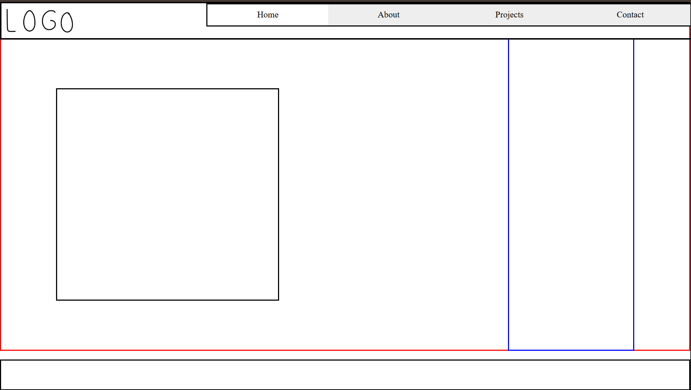

A Web Portfolio Built with HTML, CSS, & JavaScript.


Looked at different portfolios for research.
Started by sketching out designs.


I started writing the HTML and CSS focusing on creating an outline based on my sketches.
Expanding on the CSS that was used to create a the website outline.
Learned about Javascript in order to add Interactivity to the portfolio. This included adding working buttons on the navigation bar, and the resizing project reel on the Home page.
After adjusting the CSS and improving on assets I had already made, I put the project to a close.